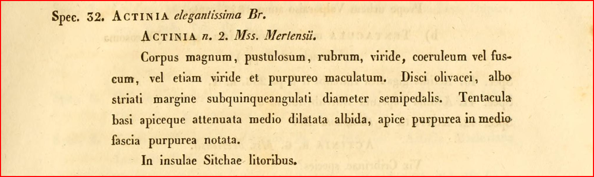
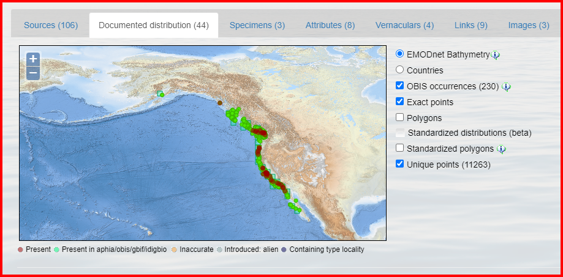
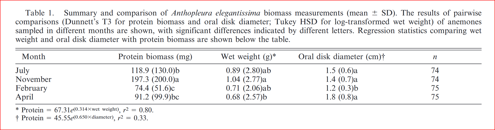
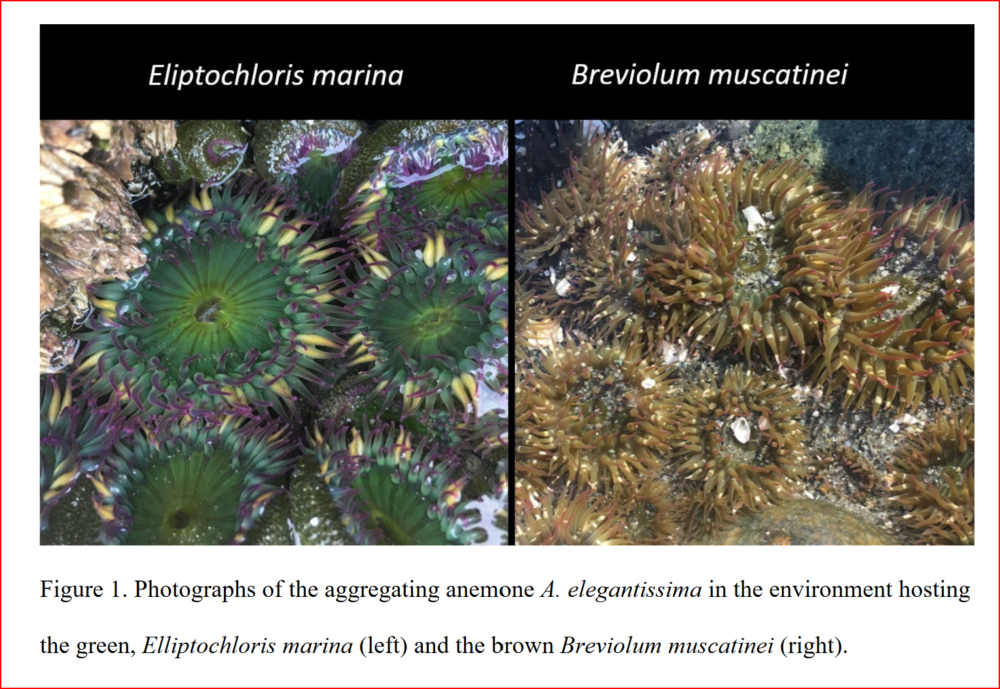
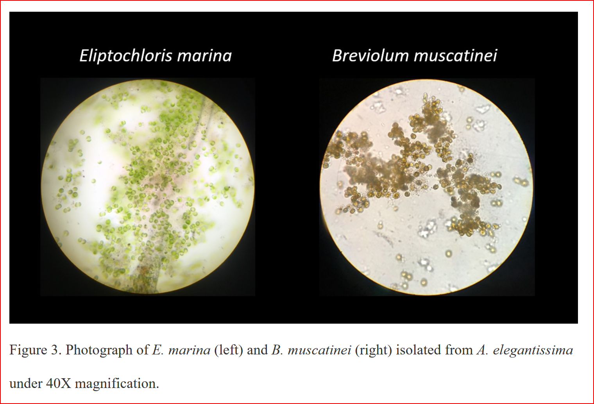
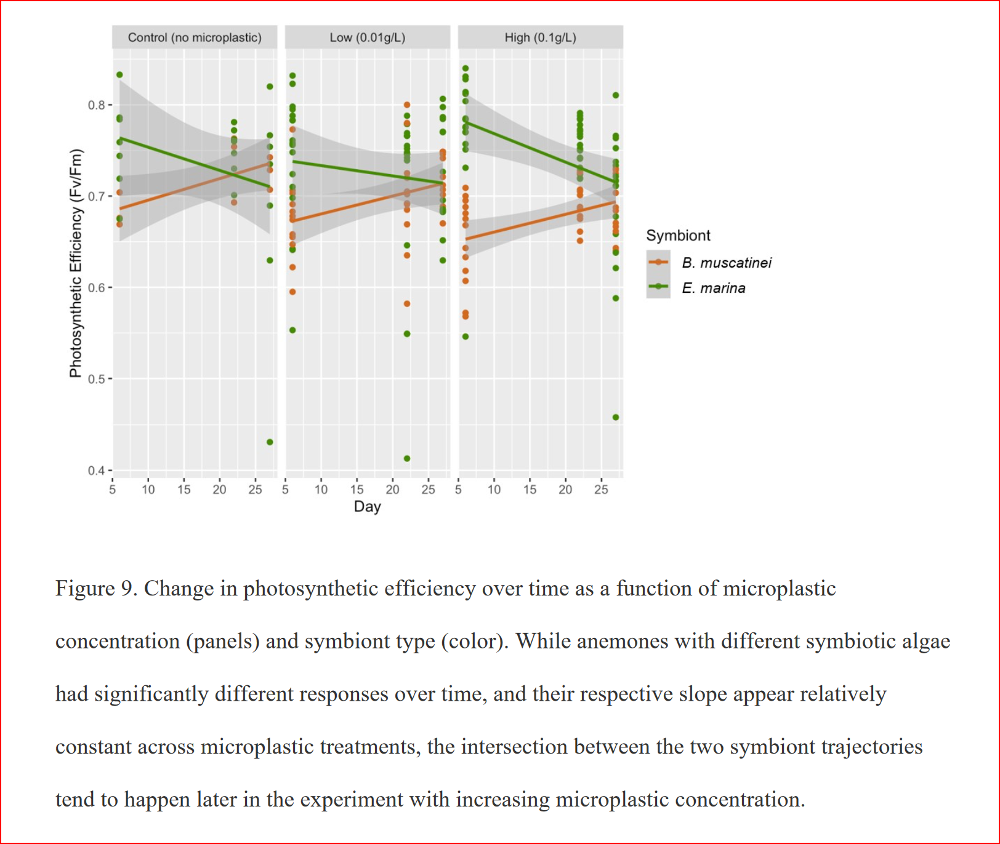

<!DOCTYPE html>
<html xmlns="http://www.w3.org/1999/xhtml" lang="en" xml:lang="en"><head>

<meta charset="utf-8">
<meta name="generator" content="quarto-1.7.31">

<meta name="viewport" content="width=device-width, initial-scale=1.0, user-scalable=yes">

<meta name="author" content="Sarah Tanja">
<meta name="dcterms.date" content="2024-05-02">

<title>All about the aggregating anemone – Sarah Tanja’s Open Lab Notebook</title>
<style>
code{white-space: pre-wrap;}
span.smallcaps{font-variant: small-caps;}
div.columns{display: flex; gap: min(4vw, 1.5em);}
div.column{flex: auto; overflow-x: auto;}
div.hanging-indent{margin-left: 1.5em; text-indent: -1.5em;}
ul.task-list{list-style: none;}
ul.task-list li input[type="checkbox"] {
  width: 0.8em;
  margin: 0 0.8em 0.2em -1em; /* quarto-specific, see https://github.com/quarto-dev/quarto-cli/issues/4556 */ 
  vertical-align: middle;
}
/* CSS for syntax highlighting */
html { -webkit-text-size-adjust: 100%; }
pre > code.sourceCode { white-space: pre; position: relative; }
pre > code.sourceCode > span { display: inline-block; line-height: 1.25; }
pre > code.sourceCode > span:empty { height: 1.2em; }
.sourceCode { overflow: visible; }
code.sourceCode > span { color: inherit; text-decoration: inherit; }
div.sourceCode { margin: 1em 0; }
pre.sourceCode { margin: 0; }
@media screen {
div.sourceCode { overflow: auto; }
}
@media print {
pre > code.sourceCode { white-space: pre-wrap; }
pre > code.sourceCode > span { text-indent: -5em; padding-left: 5em; }
}
pre.numberSource code
  { counter-reset: source-line 0; }
pre.numberSource code > span
  { position: relative; left: -4em; counter-increment: source-line; }
pre.numberSource code > span > a:first-child::before
  { content: counter(source-line);
    position: relative; left: -1em; text-align: right; vertical-align: baseline;
    border: none; display: inline-block;
    -webkit-touch-callout: none; -webkit-user-select: none;
    -khtml-user-select: none; -moz-user-select: none;
    -ms-user-select: none; user-select: none;
    padding: 0 4px; width: 4em;
  }
pre.numberSource { margin-left: 3em;  padding-left: 4px; }
div.sourceCode
  {   }
@media screen {
pre > code.sourceCode > span > a:first-child::before { text-decoration: underline; }
}
/* CSS for citations */
div.csl-bib-body { }
div.csl-entry {
  clear: both;
  margin-bottom: 0em;
}
.hanging-indent div.csl-entry {
  margin-left:2em;
  text-indent:-2em;
}
div.csl-left-margin {
  min-width:2em;
  float:left;
}
div.csl-right-inline {
  margin-left:2em;
  padding-left:1em;
}
div.csl-indent {
  margin-left: 2em;
}</style>


<script src="../../../../site_libs/quarto-nav/quarto-nav.js"></script>
<script src="../../../../site_libs/quarto-nav/headroom.min.js"></script>
<script src="../../../../site_libs/clipboard/clipboard.min.js"></script>
<script src="../../../../site_libs/quarto-search/autocomplete.umd.js"></script>
<script src="../../../../site_libs/quarto-search/fuse.min.js"></script>
<script src="../../../../site_libs/quarto-search/quarto-search.js"></script>
<meta name="quarto:offset" content="../../../../">
<link href="../../../../images/favicon.png" rel="icon" type="image/png">
<script src="../../../../site_libs/quarto-html/quarto.js" type="module"></script>
<script src="../../../../site_libs/quarto-html/tabsets/tabsets.js" type="module"></script>
<script src="../../../../site_libs/quarto-html/popper.min.js"></script>
<script src="../../../../site_libs/quarto-html/tippy.umd.min.js"></script>
<script src="../../../../site_libs/quarto-html/anchor.min.js"></script>
<link href="../../../../site_libs/quarto-html/tippy.css" rel="stylesheet">
<link href="../../../../site_libs/quarto-html/tippy.css" rel="stylesheet" class="quarto-color-scheme-extra">
<script src="../../../../site_libs/bootstrap/bootstrap.min.js"></script>
<link href="../../../../site_libs/bootstrap/bootstrap-icons.css" rel="stylesheet">
<link href="../../../../site_libs/bootstrap/bootstrap-869eb0ff6db83d51c3d8117e186cf13a.min.css" rel="stylesheet" append-hash="true" class="quarto-color-scheme" id="quarto-bootstrap" data-mode="light">
<link href="../../../../site_libs/bootstrap/bootstrap-dark-e2b38b794831ff325e66a6a88120557b.min.css" rel="stylesheet" append-hash="true" class="quarto-color-scheme quarto-color-alternate" id="quarto-bootstrap" data-mode="dark">
<link href="../../../../site_libs/bootstrap/bootstrap-869eb0ff6db83d51c3d8117e186cf13a.min.css" rel="stylesheet" append-hash="true" class="quarto-color-scheme-extra" id="quarto-bootstrap" data-mode="light">
<script id="quarto-search-options" type="application/json">{
  "location": "navbar",
  "copy-button": false,
  "collapse-after": 3,
  "panel-placement": "end",
  "type": "overlay",
  "limit": 50,
  "keyboard-shortcut": [
    "f",
    "/",
    "s"
  ],
  "show-item-context": false,
  "language": {
    "search-no-results-text": "No results",
    "search-matching-documents-text": "matching documents",
    "search-copy-link-title": "Copy link to search",
    "search-hide-matches-text": "Hide additional matches",
    "search-more-match-text": "more match in this document",
    "search-more-matches-text": "more matches in this document",
    "search-clear-button-title": "Clear",
    "search-text-placeholder": "",
    "search-detached-cancel-button-title": "Cancel",
    "search-submit-button-title": "Submit",
    "search-label": "Search"
  }
}</script>
<style>html{ scroll-behavior: smooth; }</style>

  <script src="https://cdnjs.cloudflare.com/polyfill/v3/polyfill.min.js?features=es6"></script>
  <script src="https://cdn.jsdelivr.net/npm/mathjax@3/es5/tex-chtml-full.js" type="text/javascript"></script>

<script type="text/javascript">
const typesetMath = (el) => {
  if (window.MathJax) {
    // MathJax Typeset
    window.MathJax.typeset([el]);
  } else if (window.katex) {
    // KaTeX Render
    var mathElements = el.getElementsByClassName("math");
    var macros = [];
    for (var i = 0; i < mathElements.length; i++) {
      var texText = mathElements[i].firstChild;
      if (mathElements[i].tagName == "SPAN") {
        window.katex.render(texText.data, mathElements[i], {
          displayMode: mathElements[i].classList.contains('display'),
          throwOnError: false,
          macros: macros,
          fleqn: false
        });
      }
    }
  }
}
window.Quarto = {
  typesetMath
};
</script>

<meta property="og:title" content="All about the aggregating anemone – Sarah Tanja’s Open Lab Notebook">
<meta property="og:description" content="What, where, who studies it, how, and why!">
<meta property="og:image" content="https://sarahtanja.github.io/quarto-blog/posts/projects/anemone/field-collection/field-pics/1/PXL_20240319_011553108.jpg">
<meta property="og:site_name" content="Sarah Tanja's Open Lab Notebook">
</head>

<body class="floating nav-fixed slimcontent quarto-light"><script id="quarto-html-before-body" type="application/javascript">
    const toggleBodyColorMode = (bsSheetEl) => {
      const mode = bsSheetEl.getAttribute("data-mode");
      const bodyEl = window.document.querySelector("body");
      if (mode === "dark") {
        bodyEl.classList.add("quarto-dark");
        bodyEl.classList.remove("quarto-light");
      } else {
        bodyEl.classList.add("quarto-light");
        bodyEl.classList.remove("quarto-dark");
      }
    }
    const toggleBodyColorPrimary = () => {
      const bsSheetEl = window.document.querySelector("link#quarto-bootstrap:not([rel=disabled-stylesheet])");
      if (bsSheetEl) {
        toggleBodyColorMode(bsSheetEl);
      }
    }
    const setColorSchemeToggle = (alternate) => {
      const toggles = window.document.querySelectorAll('.quarto-color-scheme-toggle');
      for (let i=0; i < toggles.length; i++) {
        const toggle = toggles[i];
        if (toggle) {
          if (alternate) {
            toggle.classList.add("alternate");
          } else {
            toggle.classList.remove("alternate");
          }
        }
      }
    };
    const toggleColorMode = (alternate) => {
      // Switch the stylesheets
      const primaryStylesheets = window.document.querySelectorAll('link.quarto-color-scheme:not(.quarto-color-alternate)');
      const alternateStylesheets = window.document.querySelectorAll('link.quarto-color-scheme.quarto-color-alternate');
      manageTransitions('#quarto-margin-sidebar .nav-link', false);
      if (alternate) {
        // note: dark is layered on light, we don't disable primary!
        enableStylesheet(alternateStylesheets);
        for (const sheetNode of alternateStylesheets) {
          if (sheetNode.id === "quarto-bootstrap") {
            toggleBodyColorMode(sheetNode);
          }
        }
      } else {
        disableStylesheet(alternateStylesheets);
        enableStylesheet(primaryStylesheets)
        toggleBodyColorPrimary();
      }
      manageTransitions('#quarto-margin-sidebar .nav-link', true);
      // Switch the toggles
      setColorSchemeToggle(alternate)
      // Hack to workaround the fact that safari doesn't
      // properly recolor the scrollbar when toggling (#1455)
      if (navigator.userAgent.indexOf('Safari') > 0 && navigator.userAgent.indexOf('Chrome') == -1) {
        manageTransitions("body", false);
        window.scrollTo(0, 1);
        setTimeout(() => {
          window.scrollTo(0, 0);
          manageTransitions("body", true);
        }, 40);
      }
    }
    const disableStylesheet = (stylesheets) => {
      for (let i=0; i < stylesheets.length; i++) {
        const stylesheet = stylesheets[i];
        stylesheet.rel = 'disabled-stylesheet';
      }
    }
    const enableStylesheet = (stylesheets) => {
      for (let i=0; i < stylesheets.length; i++) {
        const stylesheet = stylesheets[i];
        if(stylesheet.rel !== 'stylesheet') { // for Chrome, which will still FOUC without this check
          stylesheet.rel = 'stylesheet';
        }
      }
    }
    const manageTransitions = (selector, allowTransitions) => {
      const els = window.document.querySelectorAll(selector);
      for (let i=0; i < els.length; i++) {
        const el = els[i];
        if (allowTransitions) {
          el.classList.remove('notransition');
        } else {
          el.classList.add('notransition');
        }
      }
    }
    const isFileUrl = () => {
      return window.location.protocol === 'file:';
    }
    const hasAlternateSentinel = () => {
      let styleSentinel = getColorSchemeSentinel();
      if (styleSentinel !== null) {
        return styleSentinel === "alternate";
      } else {
        return false;
      }
    }
    const setStyleSentinel = (alternate) => {
      const value = alternate ? "alternate" : "default";
      if (!isFileUrl()) {
        window.localStorage.setItem("quarto-color-scheme", value);
      } else {
        localAlternateSentinel = value;
      }
    }
    const getColorSchemeSentinel = () => {
      if (!isFileUrl()) {
        const storageValue = window.localStorage.getItem("quarto-color-scheme");
        return storageValue != null ? storageValue : localAlternateSentinel;
      } else {
        return localAlternateSentinel;
      }
    }
    const toggleGiscusIfUsed = (isAlternate, darkModeDefault) => {
      const baseTheme = document.querySelector('#giscus-base-theme')?.value ?? 'light';
      const alternateTheme = document.querySelector('#giscus-alt-theme')?.value ?? 'dark';
      let newTheme = '';
      if(authorPrefersDark) {
        newTheme = isAlternate ? baseTheme : alternateTheme;
      } else {
        newTheme = isAlternate ? alternateTheme : baseTheme;
      }
      const changeGiscusTheme = () => {
        // From: https://github.com/giscus/giscus/issues/336
        const sendMessage = (message) => {
          const iframe = document.querySelector('iframe.giscus-frame');
          if (!iframe) return;
          iframe.contentWindow.postMessage({ giscus: message }, 'https://giscus.app');
        }
        sendMessage({
          setConfig: {
            theme: newTheme
          }
        });
      }
      const isGiscussLoaded = window.document.querySelector('iframe.giscus-frame') !== null;
      if (isGiscussLoaded) {
        changeGiscusTheme();
      }
    };
    const authorPrefersDark = false;
    const queryPrefersDark = window.matchMedia('(prefers-color-scheme: dark)');
    const darkModeDefault = queryPrefersDark.matches;
      document.querySelector('link#quarto-text-highlighting-styles.quarto-color-scheme-extra').rel = 'disabled-stylesheet';
      document.querySelector('link#quarto-bootstrap.quarto-color-scheme-extra').rel = 'disabled-stylesheet';
    let localAlternateSentinel = darkModeDefault ? 'alternate' : 'default';
    // Dark / light mode switch
    window.quartoToggleColorScheme = () => {
      // Read the current dark / light value
      let toAlternate = !hasAlternateSentinel();
      toggleColorMode(toAlternate);
      setStyleSentinel(toAlternate);
      toggleGiscusIfUsed(toAlternate, darkModeDefault);
      window.dispatchEvent(new Event('resize'));
    };
    queryPrefersDark.addEventListener("change", e => {
      if(window.localStorage.getItem("quarto-color-scheme") !== null)
        return;
      const alternate = e.matches
      toggleColorMode(alternate);
      localAlternateSentinel = e.matches ? 'alternate' : 'default'; // this is used alongside local storage!
      toggleGiscusIfUsed(alternate, darkModeDefault);
    });
    // Switch to dark mode if need be
    if (hasAlternateSentinel()) {
      toggleColorMode(true);
    } else {
      toggleColorMode(false);
    }
  </script>

<div id="quarto-search-results"></div>
  <header id="quarto-header" class="headroom fixed-top quarto-banner">
    <nav class="navbar navbar-expand-lg " data-bs-theme="dark">
      <div class="navbar-container container-fluid">
      <div class="navbar-brand-container mx-auto">
    <a class="navbar-brand" href="../../../../index.html">
    <span class="navbar-title">Sarah Tanja’s Open Lab Notebook</span>
    </a>
  </div>
            <div id="quarto-search" class="" title="Search"></div>
          <button class="navbar-toggler" type="button" data-bs-toggle="collapse" data-bs-target="#navbarCollapse" aria-controls="navbarCollapse" role="menu" aria-expanded="false" aria-label="Toggle navigation" onclick="if (window.quartoToggleHeadroom) { window.quartoToggleHeadroom(); }">
  <span class="navbar-toggler-icon"></span>
</button>
          <div class="collapse navbar-collapse" id="navbarCollapse">
            <ul class="navbar-nav navbar-nav-scroll ms-auto">
  <li class="nav-item">
    <a class="nav-link" href="../../../../projects.html"> 
<span class="menu-text">Projects</span></a>
  </li>  
  <li class="nav-item">
    <a class="nav-link" href="../../../../posts.html"> 
<span class="menu-text">Posts</span></a>
  </li>  
  <li class="nav-item">
    <a class="nav-link" href="../../../../about.html"> 
<span class="menu-text">About</span></a>
  </li>  
  <li class="nav-item compact">
    <a class="nav-link" href="https://www.linkedin.com/in/sarah-tanja-595722146/"> <i class="bi bi-linkedin" role="img">
</i> 
<span class="menu-text"></span></a>
  </li>  
  <li class="nav-item dropdown ">
    <a class="nav-link dropdown-toggle" href="#" id="nav-menu-bi-github" role="link" data-bs-toggle="dropdown" aria-expanded="false">
      <i class="bi bi-github" role="img">
</i> 
 <span class="menu-text"></span>
    </a>
    <ul class="dropdown-menu dropdown-menu-end" aria-labelledby="nav-menu-bi-github">    
        <li>
    <a class="dropdown-item" href="https://github.com/sarahtanja">
 <span class="dropdown-text">Sarah’s GitHub</span></a>
  </li>  
        <li>
    <a class="dropdown-item" href="https://github.com/sarahtanja/coral-embryo-leachate">
 <span class="dropdown-text">Coral Embryology Project Repository</span></a>
  </li>  
        <li>
    <a class="dropdown-item" href="https://github.com/sarahtanja/coral-leachate-heat">
 <span class="dropdown-text">Coral Photophysiology Project Repository</span></a>
  </li>  
        <li>
    <a class="dropdown-item" href="https://github.com/sarahtanja/anemone-leachate-heat">
 <span class="dropdown-text">Anemone Photophysiology Project Repository</span></a>
  </li>  
        <li>
    <a class="dropdown-item" href="https://github.com/sarahtanja/coral-pae-temp">
 <span class="dropdown-text">Coral Microbiome Project Repository</span></a>
  </li>  
    </ul>
  </li>
  <li class="nav-item dropdown ">
    <a class="nav-link dropdown-toggle" href="#" id="nav-menu-bi-envelope-paper" role="link" data-bs-toggle="dropdown" aria-expanded="false">
      <i class="bi bi-envelope-paper" role="img">
</i> 
 <span class="menu-text"></span>
    </a>
    <ul class="dropdown-menu dropdown-menu-end" aria-labelledby="nav-menu-bi-envelope-paper">    
        <li class="dropdown-header">stanja@uw.edu</li>
        <li>
    <a class="dropdown-item" href="../../../../contact.html">
 <span class="dropdown-text">Contact</span></a>
  </li>  
    </ul>
  </li>
</ul>
          </div> <!-- /navcollapse -->
            <div class="quarto-navbar-tools">
  <a href="" class="quarto-color-scheme-toggle quarto-navigation-tool  px-1" onclick="window.quartoToggleColorScheme(); return false;" title="Toggle dark mode"><i class="bi"></i></a>
</div>
      </div> <!-- /container-fluid -->
    </nav>
</header>
<!-- content -->
<header id="title-block-header" class="quarto-title-block default toc-left page-columns page-full">
  <div class="quarto-title-banner page-columns page-full">
    <div class="quarto-title column-body">
      <div class="quarto-title-block"><div><h1 class="title">All about the aggregating anemone</h1><button type="button" class="btn code-tools-button" id="quarto-code-tools-source"><i class="bi"></i> Code</button></div></div>
            <p class="subtitle lead">What, where, who studies it, how, and why!</p>
                                <div class="quarto-categories">
                <div class="quarto-category">learning journey</div>
                <div class="quarto-category">anemones</div>
              </div>
                  </div>
  </div>
    
  
  <div class="quarto-title-meta">

      <div>
      <div class="quarto-title-meta-heading">Author</div>
      <div class="quarto-title-meta-contents">
               <p>Sarah Tanja </p>
            </div>
    </div>
      
      <div>
      <div class="quarto-title-meta-heading">Published</div>
      <div class="quarto-title-meta-contents">
        <p class="date">May 2, 2024</p>
      </div>
    </div>
    
      <div>
      <div class="quarto-title-meta-heading">Modified</div>
      <div class="quarto-title-meta-contents">
        <p class="date-modified">August 20, 2025</p>
      </div>
    </div>
      
    </div>
    
  
  </header><div id="quarto-content" class="quarto-container page-columns page-rows-contents page-layout-article page-navbar">
<!-- sidebar -->
  <nav id="quarto-sidebar" class="sidebar collapse collapse-horizontal quarto-sidebar-collapse-item sidebar-navigation floating overflow-auto">
    <nav id="TOC" role="doc-toc" class="toc-active">
    <h2 id="toc-title">Contents <i class="bi bi-bookmark-heart"></i></h2>
   
  <ul>
  <li><a href="#what-are-anthopleura-elegantissima" id="toc-what-are-anthopleura-elegantissima" class="nav-link active" data-scroll-target="#what-are-anthopleura-elegantissima"><em>What are Anthopleura elegantissima?</em></a>
  <ul>
  <li><a href="#taxonomy" id="toc-taxonomy" class="nav-link" data-scroll-target="#taxonomy">Taxonomy</a></li>
  </ul></li>
  <li><a href="#where-are-aggregating-anemones-found" id="toc-where-are-aggregating-anemones-found" class="nav-link" data-scroll-target="#where-are-aggregating-anemones-found">Where are aggregating anemones found?</a></li>
  <li><a href="#who-studies-them-in-the-pnw" id="toc-who-studies-them-in-the-pnw" class="nav-link" data-scroll-target="#who-studies-them-in-the-pnw">Who studies them in the PNW?</a></li>
  <li><a href="#what-have-they-found" id="toc-what-have-they-found" class="nav-link" data-scroll-target="#what-have-they-found">What have they found?</a>
  <ul>
  <li><a href="#they-may-have-underappreciated-importance-as-coastal-primary-producers" id="toc-they-may-have-underappreciated-importance-as-coastal-primary-producers" class="nav-link" data-scroll-target="#they-may-have-underappreciated-importance-as-coastal-primary-producers">They may have underappreciated importance as coastal primary producers</a></li>
  <li><a href="#they-have-a-broad-5-33.6c-thermal-tolerance" id="toc-they-have-a-broad-5-33.6c-thermal-tolerance" class="nav-link" data-scroll-target="#they-have-a-broad-5-33.6c-thermal-tolerance">They have a broad (5-33.6C) thermal tolerance</a></li>
  <li><a href="#they-have-warriors-at-their-aggregate-boundaries" id="toc-they-have-warriors-at-their-aggregate-boundaries" class="nav-link" data-scroll-target="#they-have-warriors-at-their-aggregate-boundaries">They have warriors at their aggregate boundaries</a></li>
  <li><a href="#they-have-a-linear-relationship-between-wet-weight-oral-disc-diameter-and-protein-content" id="toc-they-have-a-linear-relationship-between-wet-weight-oral-disc-diameter-and-protein-content" class="nav-link" data-scroll-target="#they-have-a-linear-relationship-between-wet-weight-oral-disc-diameter-and-protein-content">They have a linear relationship between wet weight, oral disc diameter and protein content</a></li>
  <li><a href="#animal-husbandry" id="toc-animal-husbandry" class="nav-link" data-scroll-target="#animal-husbandry">Animal husbandry</a>
  <ul>
  <li><a href="#irradiance-of-b.-muscatinei-hosting-anemones" id="toc-irradiance-of-b.-muscatinei-hosting-anemones" class="nav-link" data-scroll-target="#irradiance-of-b.-muscatinei-hosting-anemones">Irradiance of B. muscatinei hosting Anemones</a></li>
  </ul></li>
  <li><a href="#symbiosis" id="toc-symbiosis" class="nav-link" data-scroll-target="#symbiosis">Symbiosis</a></li>
  </ul></li>
  </ul>
</nav>
</nav>
<div id="quarto-sidebar-glass" class="quarto-sidebar-collapse-item" data-bs-toggle="collapse" data-bs-target=".quarto-sidebar-collapse-item"></div>
<!-- margin-sidebar -->
    <div id="quarto-margin-sidebar" class="sidebar margin-sidebar zindex-bottom">
    </div>
<!-- main -->
<main class="content quarto-banner-title-block page-columns page-full" id="quarto-document-content">


<section id="what-are-anthopleura-elegantissima" class="level1 page-columns page-full">
<h1><em>What are Anthopleura elegantissima?</em></h1>
<div class="quarto-figure quarto-figure-center">
<figure class="figure">
<p></p>
<figcaption>A boulder covered in A. elegantissima anemones at Owens Beach near Point Defiance, Tacoma, Washington</figcaption>
</figure>
</div>
<p><em>Anthopleura elegantissima</em> are clonal intertidal anemones that can form flexible symbiotic partnerships with different single-celled algae which provide supplemental sugars to their diet, or alternatively, they can live ‘aposymbiotically’, relying wholly on prey capture for their food. They are commonly called the ‘aggregating anemone’, or ‘clonal-anemone’ because they form large clonal aggregates. Another common-name is the ‘pink-tipped anemone’, because of the pink tinge to the tips of their tentacles. As shown in the image above, they can completely cover large boulders in the intertidal zone with hundreds of individuals that are all genetic clones of each other.</p>
<div class="page-columns page-full"><blockquote class="blockquote">
<p>“This anemone is an effective predator living in zooplankton-rich water, so one would not expect it to be as nutrient-limited, nor as dependent on algal photosynthetic productivity as its tropical symbiotic counterparts. It is also adapted to prolonged aerial exposure and greater temperature extremes; the animal feeds and its symbionts photosynthesize at temperatures approaching 5°C.” - <span class="citation" data-cites="mccloskey1996">McCloskey, Cove, and Verde (<a href="#ref-mccloskey1996" role="doc-biblioref">1996</a>)</span></p>
</blockquote><div class="no-row-height column-margin column-container"></div></div>
<section id="taxonomy" class="level2 page-columns page-full">
<h2 class="anchored" data-anchor-id="taxonomy">Taxonomy</h2>
<p>The aggregating anemone was first described in scientific literature by Johann-Friedrich Brandt in 1835. Their taxonomic name, <em>Anthopleura elegantissima (Brandt 1835)</em>, is thus tied to a latin description which can be translated:</p>
<blockquote class="blockquote">
<p>“The body is large, pustular, red, green, blue, or brown, or even spotted with green and purple. The disc is oval, with a white striated margin and a sub-pentangular margin of half a foot in diameter. The tentacles at the base and apex are narrowed and widened white, the apex is purple, marked with a purple band in the middle. On the shores of the island of Sitka.”</p>
</blockquote>
<div class="quarto-figure quarto-figure-center">
<figure class="figure">
<p><a href="https://www.biodiversitylibrary.org/page/10765502"></a></p>
<figcaption>This original description of what is now called Anthopleura elegantissima, but was originally ‘Actinia elegantissima’ was made by Johann-Friedrich Brandt in 1835. This description was published in latin, in a book titled ‘Prodromus descriptionis animalium ab H. Mertensio observatorum : fascic. I. Polypos, Acalephas Discophoras et Siphonophoras, nec non Echinodermata continens’ in St.&nbsp;Petersburg, Russia</figcaption>
</figure>
</div>
<p>Brandt was a German-Russian naturalist who was director of the Zoological Museum of St.&nbsp;Petersburg Academy of Sciences and described speciments from the expeditions of explorers off the Pacific Coast of North America. He may be best known for the description of birds like ‘Brandt’s cormorant’ and the spectacled eider. This original description by Brandt in 1835 suggests that the collection and description of this anemone species in Sitka<a href="#fn1" class="footnote-ref" id="fnref1" role="doc-noteref"><sup>1</sup></a> was done in conjuction with colonial expansion and oppression.</p>
<div class="no-row-height column-margin column-container"><div id="fn1"><p><sup>1</sup>&nbsp;In 1799 Captain Alexander Baranov, General Manager of the Shelikov-Golikov Company, establishes Sitka as a trading post as the first Russian trading charter grants the Russian-American Company sole trading rights in America for 20 years. Sitka is a strategic and important trading location and was already the indigineous homelands a large Tlingit village. Years of conflict with indigenous Koniag, Aleut, Tlingit, and colonial oppression as well as the Battles of Sitka in 1802 &amp; 1804 predate and contextualize the timeframe in which Russian naturalists were ‘discovering’ new species in North America.</p></div></div><p>You can explore more <em>A. elegantissima</em> taxonomy details <a href="https://www.marinespecies.org/aphia.php?p=taxdetails&amp;id=283347">here</a>, from the World Register of Marine Species (WORMS) webpage.</p>
<p>Puget Sound Museum of Natural History article <a href="https://www.pugetsound.edu/puget-sound-museum-natural-history/exhibits/marine-panel/aggregating-anemone">here</a></p>
<p>NCBI taxonomy sequence resources:</p>
<p><a href="https://www.ncbi.nlm.nih.gov/Taxonomy/Browser/wwwtax.cgi?id=6110&amp;lvl=0" class="uri">https://www.ncbi.nlm.nih.gov/Taxonomy/Browser/wwwtax.cgi?id=6110&amp;lvl=0</a></p>
</section>
</section>
<section id="where-are-aggregating-anemones-found" class="level1">
<h1>Where are aggregating anemones found?</h1>
<p>From Baja California to Southeast Alaska all along the Eastern Pacific Coast.</p>
<div class="quarto-figure quarto-figure-center">
<figure class="figure">
<p><a href="https://www.marinespecies.org/aphia.php?p=taxdetails&amp;id=283347#distributions"></a></p>
<figcaption>Anthopleura elegantissima distribution from the WORMS database</figcaption>
</figure>
</div>
<p><strong><em>A. elegantissima</em></strong> <strong>is very tolerant to a broad range of thermal exposures.</strong> As an intertidal organism, <em>A. elegantissima</em> regularly experience large temperature shifts throughout the day coinciding with desiccation at low tide. They are found from Baja, California to Southeast Alaska, and in anemones hosting the brown alga <em>Breviolum muscatinei</em>, temperatures from 6<sup>o</sup>C to 24<sup>o</sup>C do not significantly affect their algal density, mitotic index, or total chlorophyll (a + c), but net photosynthesis and anemone respiration both increase with temperature <span class="citation" data-cites="Verde.2002">(<a href="#ref-Verde.2002" role="doc-biblioref"><strong>Verde.2002?</strong></a>)</span>.</p>
</section>
<section id="who-studies-them-in-the-pnw" class="level1">
<h1>Who studies them in the PNW?</h1>
<p>E. Alan Verde</p>
<p>L.R. McClosky</p>
<p>Brian Bingham</p>
<p>Virginia Weiss</p>
<p>James Dimond</p>
</section>
<section id="what-have-they-found" class="level1 page-columns page-full">
<h1>What have they found?</h1>
<section id="they-may-have-underappreciated-importance-as-coastal-primary-producers" class="level2 page-columns page-full">
<h2 class="anchored" data-anchor-id="they-may-have-underappreciated-importance-as-coastal-primary-producers">They may have underappreciated importance as coastal primary producers</h2>
<div class="page-columns page-full"><blockquote class="blockquote">
<p>“The sea anemone Anthopleura elegantissima (BRANDT 1835) is an important member of many rocky intertidal communities along the west coast of North America, with extensive aggregations of these clonal animals stretching from high to low intertidal zones (Dayton 1971; Sebens 1982a). Even where they co-occur with spatially dominant mussels, densities of A. elegantissima can reach 500 individuals m2 (Sebens 1982b). Hosting symbiotic green chlorophytes (Elliptochloris marina LETSCH) and brown dinophytes (Symbiodinium spp.), members of A. elegantissima contribute significantly to intertidal productivity; in Southern California, their photosynthetic contribution is on par with that of intertidal seaweeds (Fitt et al.&nbsp;1982).” (<span class="citation" data-cites="bingham2011">(<a href="#ref-bingham2011" role="doc-biblioref">Bingham et al. 2011</a>)</span>, p.&nbsp;291)</p>
</blockquote><div class="no-row-height column-margin column-container"></div></div>
</section>
<section id="they-have-a-broad-5-33.6c-thermal-tolerance" class="level2 page-columns page-full">
<h2 class="anchored" data-anchor-id="they-have-a-broad-5-33.6c-thermal-tolerance">They have a broad (5-33.6C) thermal tolerance</h2>
<div class="page-columns page-full"><blockquote class="blockquote">
<p>“Members of A. elegantissima can tolerate much higher temperatures, at least for short periods. Dayton (1971) monitored internal body temperatures of A. elegantissima in the field and found that anemones could survive body temperatures as high as 33.6°C with no apparent negative effect. Over 3 d of field study, with different levels of sunlight and wind, body temperatures of A. elegantissima in our treatments often exceeded 24°C, and reached 32°C in the most extreme cases. Although not lethal, temperatures in this range induce the production of heat shock proteins in A. elegantissima (Snyder &amp; Rossi 2004), which may involve significant metabolic costs (Somero 2002).” (<span class="citation" data-cites="bingham2011">(<a href="#ref-bingham2011" role="doc-biblioref">Bingham et al. 2011</a>)</span>, p.&nbsp;296)</p>
</blockquote><div class="no-row-height column-margin column-container"></div></div>
<p><span class="citation" data-cites="bingham2011">Bingham et al. (<a href="#ref-bingham2011" role="doc-biblioref">2011</a>)</span> found that aggregated anemones remain cooler than isolated individuals. They posit that the anemones in an aggregate benefit from more thermal stability due to the ‘extracorporeal’ trapped water between indivudal polyps and reduced ‘windage’.</p>
<div class="no-row-height column-margin column-container"></div><div class="page-columns page-full"><blockquote class="blockquote">
<p>“Seasonal surveys at our field site revealed larger aggregations of A. elegantissima in the high intertidal zone than at lower tidal elevations, but only in the summer when temperatures were highest (Fig. 5), suggesting that aggregation in high intertidal zones may be a behavioral response to desiccation and temperature stress.” (<span class="citation" data-cites="bingham2011">(<a href="#ref-bingham2011" role="doc-biblioref">Bingham et al. 2011</a>)</span>, p.&nbsp;298)</p>
</blockquote><div class="no-row-height column-margin column-container"></div></div>
<div class="page-columns page-full"><blockquote class="blockquote">
<p>“In our field experiments, even in foggy emersion conditions, Anthopleura elegantissima body temperatures reached 8oC above ambient seawater. A. elegantissima body temperatures on sunny days reach values 17°C above that of ambient seawater, similar to that reported for emersed mussels (Mytilus sp.) and limpets (Patella vulgata) in temperate intertidal zones (Davies, 1970; Elvin and Gonor, 1979; Hofmann and Somero, 1995, 1996; Roberts et al., 1997; Helmuth, 1998).” <span class="citation" data-cites="snyder2004">(<a href="#ref-snyder2004" role="doc-biblioref">Snyder and Rossi 2004</a>)</span></p>
</blockquote><div class="no-row-height column-margin column-container"><div id="ref-snyder2004" class="csl-entry" role="listitem">
Snyder, Mark, and Sergio Rossi. 2004. <span>“Stress Protein (<span>HSP70</span> Family) Expression in Intertidal Benthic Organisms: <span>The</span> Example of <span>Anthopleura</span> Elegantissima (<span>Cnidaria</span>: <span>Anthozoa</span>).”</span> <em>Scientia Marina</em> 68 (April).
</div></div></div>
</section>
<section id="they-have-warriors-at-their-aggregate-boundaries" class="level2 page-columns page-full">
<h2 class="anchored" data-anchor-id="they-have-warriors-at-their-aggregate-boundaries">They have warriors at their aggregate boundaries</h2>
<div class="page-columns page-full"><blockquote class="blockquote">
<p>Although aggregation has clear benefits for offsetting temperature increases, the benefits may not be shared equally by all members of the group; anemones on the edges of the clone, with their more exposed body surfaces, experienced more extreme temperatures than did individuals inside the aggregation. Individuals on the edges of clonal aggregations of A. elegantissima function as warriors, developing large acrorhagi (specialized organs filled with nematocysts) to defend the boundaries of the clone (Francis 1976). The warriors are smaller, have lower fission rates, and lack gonads, presumably because energy is diverted to defensive activities (Francis 1976).”(<span class="citation" data-cites="bingham2011">(<a href="#ref-bingham2011" role="doc-biblioref">Bingham et al. 2011</a>)</span>, p.&nbsp;298)</p>
</blockquote><div class="no-row-height column-margin column-container"><div id="ref-bingham2011" class="csl-entry" role="listitem">
Bingham, Brian L., Ileana Freytes, Meredith Emery, James Dimond, and Gisèle Muller-Parker. 2011. <span>“Aerial Exposure and Body Temperature of the Intertidal Sea Anemone <span>Anthopleura</span> Elegantissima.”</span> <em>Invertebrate Biology</em> 130 (4): 291–301. <a href="https://doi.org/10.1111/j.1744-7410.2011.00241.x">https://doi.org/10.1111/j.1744-7410.2011.00241.x</a>.
</div></div></div>
</section>
<section id="they-have-a-linear-relationship-between-wet-weight-oral-disc-diameter-and-protein-content" class="level2 page-columns page-full">
<h2 class="anchored" data-anchor-id="they-have-a-linear-relationship-between-wet-weight-oral-disc-diameter-and-protein-content">They have a linear relationship between wet weight, oral disc diameter and protein content</h2>
<p>In a paper <span class="citation" data-cites="dimond2011">J. L. Dimond et al. (<a href="#ref-dimond2011" role="doc-biblioref">2011</a>)</span>, a year-long survey of <em>Anthopleura elegantissima</em> anemones to assess seasonality provides background information about the seasonal variation in anemone size and symbiosis.</p>
<div class="no-row-height column-margin column-container"></div><div class="page-columns page-full"><blockquote class="blockquote">
<p>“Anemone biomass and symbiosis—All metrics of anemone size (Table 1) indicated significant seasonal variation (protein biomass, F3,286 5 12.9, p , 0.001; wet weight, F3,287 5 3.52, p 5 0.02; oral disk diameter, F3,287 5 9.60, p , 0.001). There were no significant shore height differences in any measure (protein biomass, F2,286 5 2.36, p 5 0.09; wet weight, F2,287 5 1.97, p 5 0.14; oral disk diameter, F2,287 5 1.35, p 5 0.26) and no significant interaction effects (protein biomass, F6,286 5 0.84, p 5 0.54; wet weight, F6,287 5 0.96, p 5 0.45; oral disk diameter, F6,287 5 1.24, p 5 0.29). Wet weight was a better predictor of protein biomass than was oral disk diameter (Table 1). However, although protein biomass was significantly higher in November than in all other months, wet weight was not significantly different among July, November, and February.” - <span class="citation" data-cites="dimond2011">J. L. Dimond et al. (<a href="#ref-dimond2011" role="doc-biblioref">2011</a>)</span></p>
</blockquote><div class="no-row-height column-margin column-container"></div></div>
<div class="quarto-figure quarto-figure-center">
<figure class="figure">
<p></p>
<figcaption>Table 1. taken from Dimond et al.&nbsp;2011</figcaption>
</figure>
</div>
<p><span class="math display">\[
Protein = 67.31e^{(0.3143wet weight)} \\
r^{2} = 0.80
\]</span></p>
<p><span class="citation" data-cites="dimond2011">(<a href="#ref-dimond2011" role="doc-biblioref">J. L. Dimond et al. 2011</a>)</span></p>
<div class="no-row-height column-margin column-container"><div id="ref-dimond2011" class="csl-entry" role="listitem">
Dimond, J. L., B. L. Bingham, G. Muller-Parker, K. Wuesthoff, and L. Francis. 2011. <span>“Seasonal Stability of a Flexible Algal–Cnidarian Symbiosis in a Highly Variable Temperate Environment.”</span> <em>Limnology and Oceanography</em> 56 (6): 2233–42. <a href="https://doi.org/10.4319/lo.2011.56.6.2233">https://doi.org/10.4319/lo.2011.56.6.2233</a>.
</div></div></section>
<section id="animal-husbandry" class="level2 page-columns page-full">
<h2 class="anchored" data-anchor-id="animal-husbandry">Animal husbandry</h2>
<p>In the paper by <span class="citation" data-cites="mccloskey1996">McCloskey, Cove, and Verde (<a href="#ref-mccloskey1996" role="doc-biblioref">1996</a>)</span> the anemone’s were fed every other day with ~30mg of freshly hatched <em>Artemia nauplii</em> and maintained for 22 days with a single anemone each in its own 100mL jar, with seawater replaced every other day at 14°C ±2°C.</p>
<div class="no-row-height column-margin column-container"></div><p>In the study by <span class="citation" data-cites="dimond2017">James L. Dimond et al. (<a href="#ref-dimond2017" role="doc-biblioref">2017</a>)</span>, anemones were housed in 200mL glass beakers in a seawater flow-through tank as a bath, with the water level just below the top of the beakers.</p>
<section id="irradiance-of-b.-muscatinei-hosting-anemones" class="level3 page-columns page-full">
<h3 class="anchored" data-anchor-id="irradiance-of-b.-muscatinei-hosting-anemones">Irradiance of B. muscatinei hosting Anemones</h3>
<p>McFarland &amp; Muller-Parker 1993 report greater photosynthetic productivity in the brown dinoflagellate (*B. muscatinei*) compared to the green chlorophyte, especially at higher irradiances. <em>B. muscatinei</em></p>
<p>For anemones hosting <em>B. muscatinei</em> :</p>
<blockquote class="blockquote page-columns page-full">
<ul>
<li><p>Maximum midday irradiance usually exceeded <span class="math inline">\(2,000 mu/ mol m^{-2} s^{-1}\)</span> , where no photoinhibition was observed (Verde &amp; McCloskey 1996)</p></li>
<li><p>Under experimental manipulations in the laboratory, ZX photosynthetic rates were suppressed at 2,000 lmolÆm–2Æs–1, indicative of photoinhibition (see below). Photoinhibitory phenomena are often associated with damage to the photosynthetic apparatus. If so, the ZX would likely devote more energy and resources to damage control and repair; subsequently less energy and photosynthetic products would be available to support continued algal growth. Since ZX also displayed photoinhibition at 1,400 lmolÆm–2Æs–1, yet did not show a reduction in MI, the onset of the deleterious effects of damage repair would seem to occur at intensities above 1,400 lmolÆm–2Æ s–1. In contrast, anemone metabolic rates were elevated at 2,000 lmolÆm–2Æs–1; it may simply be that the host requires more energy and organic resources to meet its elevated respiratory demands, and the ZX symbiont provides both at the expense of its own growth <span class="citation" data-cites="e.2002">E. and L. (<a href="#ref-e.2002" role="doc-biblioref">2002</a>)</span>.</p></li>
<li><p>Not light saturated up to <span class="math inline">\(550 mu/ mol m^{-2} s^{-1}\)</span> (Verde &amp; McCloskey 1996)</p></li>
<li><p><em>B. muscatinei</em> peaked at $800 mu/ mol m^{-2} s^{-1}$ <span class="citation" data-cites="e.2002">E. and L. (<a href="#ref-e.2002" role="doc-biblioref">2002</a>)</span> .</p></li>
</ul>
<div class="no-row-height column-margin column-container"><div id="ref-e.2002" class="csl-entry" role="listitem">
E., Verde, and McCloskey L. 2002. <span>“A Comparative Analysis of the Photobiology of Zooxanthellae and Zoochlorellae Symbiotic with the Temperate Clonal Anemone <span>Anthopleura</span> Elegantissima (<span>Brandt</span>).”</span> <em>Marine Biology</em> 141 (2): 225–39. <a href="https://doi.org/10.1007/s00227-002-0824-7">https://doi.org/10.1007/s00227-002-0824-7</a>.
</div></div></blockquote>
</section>
</section>
<section id="symbiosis" class="level2 page-columns page-full">
<h2 class="anchored" data-anchor-id="symbiosis">Symbiosis</h2>
<p><strong><em>A. elegantissima</em></strong> <strong>gains symbionts through horizontal transmission</strong> <span class="citation" data-cites="lajeunesse2000a">(<a href="#ref-lajeunesse2000a" role="doc-biblioref">Lajeunesse and Trench 2000</a>)</span><strong>. (Trench 1987)</strong></p>
<div class="no-row-height column-margin column-container"></div><p>Normally, <em>A. elegantissima</em> expels symbionts from its coelenteron in a bolus of mucus and undigested material. Expulsion of symbionts should not be confused with “bleaching” phenomenon in reef corals, and may serve an ulterior purpose and undergo a different process. The anemones ‘cull’ or ‘weed’ the symbionts to maintain an optimal symbiont population density.</p>
<p>The optimized symbiont density is reported in the literature as 10<sup>6</sup> cells·mg<sup>-1</sup> of host protein and 1-5·10<sup>6</sup> cells·cm<sup>-2</sup> <span class="citation" data-cites="mccloskey1996">(<a href="#ref-mccloskey1996" role="doc-biblioref">McCloskey, Cove, and Verde 1996</a>)</span>.</p>
<div class="no-row-height column-margin column-container"></div><div class="page-columns page-full"><blockquote class="blockquote">
<p>Sea anemones of the genus Anthopleura along northeast Pacific intertidal shores engage in a particularly unique symbiosis with two especially phylogenetically and physiologically different symbionts: the chlorophyte <em>Elliptochloris marina</em> (Letsch et al., 2009) and the dinoflagellate <em>Symbiodinium muscatinei</em> (LaJeunesse and Trench, 2000). - <span class="citation" data-cites="dimond2017">James L. Dimond et al. (<a href="#ref-dimond2017" role="doc-biblioref">2017</a>)</span></p>
</blockquote><div class="no-row-height column-margin column-container"></div></div>
<p>The <em>Symbiodinium muscatinei</em><span class="citation" data-cites="lajeunesse2000a">(<a href="#ref-lajeunesse2000a" role="doc-biblioref">Lajeunesse and Trench 2000</a>)</span>were reclassified as <em>Breviolum muscatinei</em></p>
<div class="no-row-height column-margin column-container"><div id="ref-lajeunesse2000a" class="csl-entry" role="listitem">
Lajeunesse, Tc, and Rk Trench. 2000. <span>“Biogeography of Two Species of <span>Symbiodinium</span> (<span>Freudenthal</span>) Inhabiting the Intertidal Sea Anemone <span>Anthopleura</span> Elegantissima (<span>Brandt</span>).”</span> <em>The Biological Bulletin</em> 199 (2): 126–34. <a href="https://doi.org/10.2307/1542872">https://doi.org/10.2307/1542872</a>.
</div><div id="ref-mccloskey1996" class="csl-entry" role="listitem">
McCloskey, L. R., Timothy G. Cove, and E.Alan Verde. 1996. <span>“Symbiont Expulsion from the Anemone <span>Anthopleura</span> Elegantissima (<span>Brandt</span>) (<span>Cnidaria</span>; <span>Anthozoa</span>).”</span> <em>Journal of Experimental Marine Biology and Ecology</em> 195 (2): 173–86. <a href="https://doi.org/10.1016/0022-0981(95)00079-8">https://doi.org/10.1016/0022-0981(95)00079-8</a>.
</div></div><p>Most anemones only host one symbiont, or the other. It is rare for mixed assemblages of the two ‘symbiont morphs’ to occur. In the paper by <span class="citation" data-cites="mccloskey1996">McCloskey, Cove, and Verde (<a href="#ref-mccloskey1996" role="doc-biblioref">1996</a>)</span>, they found that among 91 anemones, &gt;95% had a single symbiont type. The chlorophyte <em>Elliptochloris marina</em> is relatively sensitive to light and is limited to cooler, low light environments typical of the low intertidal. The dinoflagellate <em>B. muscatinei</em>, on the other hand, tolerates higher light and temperatures and is more commonly found in anemones in the upper intertidal zone. Aposymbiotic (non-symbiont forming) <em>A. elegantissima</em> anemones can be found thriving in very low light conditions, often inside rocky crevasses within the intertidal zone. Transplantation of <em>A. elegantissima</em> anemones with chlorophyte <em>E. marina</em> symbionts to warmer, higher-light environments results in shifts in the symbiont population from <em>E. marina</em> to <em>B. muscatinei</em> <span class="citation" data-cites="dimond2017">(<a href="#ref-dimond2017" role="doc-biblioref">James L. Dimond et al. 2017</a>)</span>.</p>
<p>Anemones hosting <em>B. muscatinei</em> have a golden-brown color, while those that host <em>E. marina</em> are mossy green. Symbiont type can be verified by viewing excised tentacles under light microscopy, and commonly, no mixed-symbiont populations are observed <span class="citation" data-cites="dimond2017">(<a href="#ref-dimond2017" role="doc-biblioref">James L. Dimond et al. 2017</a>)</span>.</p>
<div class="no-row-height column-margin column-container"><div id="ref-dimond2017" class="csl-entry" role="listitem">
Dimond, James L., Shad Orechovesky, Jonas Oppenheimer, Jean Rodríguez-Ramos, and Brian L. Bingham. 2017. <span>“Photophysiology and Hydrogen Peroxide Generation of the Dinoflagellate and Chlorophyte Symbionts of the Sea Anemone <span>Anthopleura</span> Elegantissima.”</span> <em>Journal of Experimental Marine Biology and Ecology</em> 489 (April): 43–47. <a href="https://doi.org/10.1016/j.jembe.2017.01.008">https://doi.org/10.1016/j.jembe.2017.01.008</a>.
</div></div><div class="quarto-figure quarto-figure-center">
<figure class="figure">
<p></p>
<figcaption>Figure 1 from the dissertation by Beck, 2022 WWU</figcaption>
</figure>
</div>
<div class="quarto-figure quarto-figure-center">
<figure class="figure">
<p></p>
<figcaption>Figure 3 from the dissertation by Beck, 2022 WWU</figcaption>
</figure>
</div>
<div class="quarto-figure quarto-figure-center">
<figure class="figure">
<p></p>
<figcaption>Figure 9 from the dissertation by Beck, 2022 WWU</figcaption>
</figure>
</div>


<!-- -->


</section>
</section>


</main> <!-- /main -->
<script id="quarto-html-after-body" type="application/javascript">
  window.document.addEventListener("DOMContentLoaded", function (event) {
    // Ensure there is a toggle, if there isn't float one in the top right
    if (window.document.querySelector('.quarto-color-scheme-toggle') === null) {
      const a = window.document.createElement('a');
      a.classList.add('top-right');
      a.classList.add('quarto-color-scheme-toggle');
      a.href = "";
      a.onclick = function() { try { window.quartoToggleColorScheme(); } catch {} return false; };
      const i = window.document.createElement("i");
      i.classList.add('bi');
      a.appendChild(i);
      window.document.body.appendChild(a);
    }
    setColorSchemeToggle(hasAlternateSentinel())
    const icon = "";
    const anchorJS = new window.AnchorJS();
    anchorJS.options = {
      placement: 'right',
      icon: icon
    };
    anchorJS.add('.anchored');
    const isCodeAnnotation = (el) => {
      for (const clz of el.classList) {
        if (clz.startsWith('code-annotation-')) {                     
          return true;
        }
      }
      return false;
    }
    const onCopySuccess = function(e) {
      // button target
      const button = e.trigger;
      // don't keep focus
      button.blur();
      // flash "checked"
      button.classList.add('code-copy-button-checked');
      var currentTitle = button.getAttribute("title");
      button.setAttribute("title", "Copied!");
      let tooltip;
      if (window.bootstrap) {
        button.setAttribute("data-bs-toggle", "tooltip");
        button.setAttribute("data-bs-placement", "left");
        button.setAttribute("data-bs-title", "Copied!");
        tooltip = new bootstrap.Tooltip(button, 
          { trigger: "manual", 
            customClass: "code-copy-button-tooltip",
            offset: [0, -8]});
        tooltip.show();    
      }
      setTimeout(function() {
        if (tooltip) {
          tooltip.hide();
          button.removeAttribute("data-bs-title");
          button.removeAttribute("data-bs-toggle");
          button.removeAttribute("data-bs-placement");
        }
        button.setAttribute("title", currentTitle);
        button.classList.remove('code-copy-button-checked');
      }, 1000);
      // clear code selection
      e.clearSelection();
    }
    const getTextToCopy = function(trigger) {
        const codeEl = trigger.previousElementSibling.cloneNode(true);
        for (const childEl of codeEl.children) {
          if (isCodeAnnotation(childEl)) {
            childEl.remove();
          }
        }
        return codeEl.innerText;
    }
    const clipboard = new window.ClipboardJS('.code-copy-button:not([data-in-quarto-modal])', {
      text: getTextToCopy
    });
    clipboard.on('success', onCopySuccess);
    if (window.document.getElementById('quarto-embedded-source-code-modal')) {
      const clipboardModal = new window.ClipboardJS('.code-copy-button[data-in-quarto-modal]', {
        text: getTextToCopy,
        container: window.document.getElementById('quarto-embedded-source-code-modal')
      });
      clipboardModal.on('success', onCopySuccess);
    }
    const viewSource = window.document.getElementById('quarto-view-source') ||
                       window.document.getElementById('quarto-code-tools-source');
    if (viewSource) {
      const sourceUrl = viewSource.getAttribute("data-quarto-source-url");
      viewSource.addEventListener("click", function(e) {
        if (sourceUrl) {
          // rstudio viewer pane
          if (/\bcapabilities=\b/.test(window.location)) {
            window.open(sourceUrl);
          } else {
            window.location.href = sourceUrl;
          }
        } else {
          const modal = new bootstrap.Modal(document.getElementById('quarto-embedded-source-code-modal'));
          modal.show();
        }
        return false;
      });
    }
    function toggleCodeHandler(show) {
      return function(e) {
        const detailsSrc = window.document.querySelectorAll(".cell > details > .sourceCode");
        for (let i=0; i<detailsSrc.length; i++) {
          const details = detailsSrc[i].parentElement;
          if (show) {
            details.open = true;
          } else {
            details.removeAttribute("open");
          }
        }
        const cellCodeDivs = window.document.querySelectorAll(".cell > .sourceCode");
        const fromCls = show ? "hidden" : "unhidden";
        const toCls = show ? "unhidden" : "hidden";
        for (let i=0; i<cellCodeDivs.length; i++) {
          const codeDiv = cellCodeDivs[i];
          if (codeDiv.classList.contains(fromCls)) {
            codeDiv.classList.remove(fromCls);
            codeDiv.classList.add(toCls);
          } 
        }
        return false;
      }
    }
    const hideAllCode = window.document.getElementById("quarto-hide-all-code");
    if (hideAllCode) {
      hideAllCode.addEventListener("click", toggleCodeHandler(false));
    }
    const showAllCode = window.document.getElementById("quarto-show-all-code");
    if (showAllCode) {
      showAllCode.addEventListener("click", toggleCodeHandler(true));
    }
      var localhostRegex = new RegExp(/^(?:http|https):\/\/localhost\:?[0-9]*\//);
      var mailtoRegex = new RegExp(/^mailto:/);
        var filterRegex = new RegExp("https:\/\/sarahtanja\.github\.io\/quarto-blog\/");
      var isInternal = (href) => {
          return filterRegex.test(href) || localhostRegex.test(href) || mailtoRegex.test(href);
      }
      // Inspect non-navigation links and adorn them if external
     var links = window.document.querySelectorAll('a[href]:not(.nav-link):not(.navbar-brand):not(.toc-action):not(.sidebar-link):not(.sidebar-item-toggle):not(.pagination-link):not(.no-external):not([aria-hidden]):not(.dropdown-item):not(.quarto-navigation-tool):not(.about-link)');
      for (var i=0; i<links.length; i++) {
        const link = links[i];
        if (!isInternal(link.href)) {
          // undo the damage that might have been done by quarto-nav.js in the case of
          // links that we want to consider external
          if (link.dataset.originalHref !== undefined) {
            link.href = link.dataset.originalHref;
          }
            // target, if specified
            link.setAttribute("target", "_blank");
            if (link.getAttribute("rel") === null) {
              link.setAttribute("rel", "noopener");
            }
            // default icon
            link.classList.add("external");
        }
      }
    function tippyHover(el, contentFn, onTriggerFn, onUntriggerFn) {
      const config = {
        allowHTML: true,
        maxWidth: 500,
        delay: 100,
        arrow: false,
        appendTo: function(el) {
            return el.parentElement;
        },
        interactive: true,
        interactiveBorder: 10,
        theme: 'quarto',
        placement: 'bottom-start',
      };
      if (contentFn) {
        config.content = contentFn;
      }
      if (onTriggerFn) {
        config.onTrigger = onTriggerFn;
      }
      if (onUntriggerFn) {
        config.onUntrigger = onUntriggerFn;
      }
      window.tippy(el, config); 
    }
    const noterefs = window.document.querySelectorAll('a[role="doc-noteref"]');
    for (var i=0; i<noterefs.length; i++) {
      const ref = noterefs[i];
      tippyHover(ref, function() {
        // use id or data attribute instead here
        let href = ref.getAttribute('data-footnote-href') || ref.getAttribute('href');
        try { href = new URL(href).hash; } catch {}
        const id = href.replace(/^#\/?/, "");
        const note = window.document.getElementById(id);
        if (note) {
          return note.innerHTML;
        } else {
          return "";
        }
      });
    }
    const xrefs = window.document.querySelectorAll('a.quarto-xref');
    const processXRef = (id, note) => {
      // Strip column container classes
      const stripColumnClz = (el) => {
        el.classList.remove("page-full", "page-columns");
        if (el.children) {
          for (const child of el.children) {
            stripColumnClz(child);
          }
        }
      }
      stripColumnClz(note)
      if (id === null || id.startsWith('sec-')) {
        // Special case sections, only their first couple elements
        const container = document.createElement("div");
        if (note.children && note.children.length > 2) {
          container.appendChild(note.children[0].cloneNode(true));
          for (let i = 1; i < note.children.length; i++) {
            const child = note.children[i];
            if (child.tagName === "P" && child.innerText === "") {
              continue;
            } else {
              container.appendChild(child.cloneNode(true));
              break;
            }
          }
          if (window.Quarto?.typesetMath) {
            window.Quarto.typesetMath(container);
          }
          return container.innerHTML
        } else {
          if (window.Quarto?.typesetMath) {
            window.Quarto.typesetMath(note);
          }
          return note.innerHTML;
        }
      } else {
        // Remove any anchor links if they are present
        const anchorLink = note.querySelector('a.anchorjs-link');
        if (anchorLink) {
          anchorLink.remove();
        }
        if (window.Quarto?.typesetMath) {
          window.Quarto.typesetMath(note);
        }
        if (note.classList.contains("callout")) {
          return note.outerHTML;
        } else {
          return note.innerHTML;
        }
      }
    }
    for (var i=0; i<xrefs.length; i++) {
      const xref = xrefs[i];
      tippyHover(xref, undefined, function(instance) {
        instance.disable();
        let url = xref.getAttribute('href');
        let hash = undefined; 
        if (url.startsWith('#')) {
          hash = url;
        } else {
          try { hash = new URL(url).hash; } catch {}
        }
        if (hash) {
          const id = hash.replace(/^#\/?/, "");
          const note = window.document.getElementById(id);
          if (note !== null) {
            try {
              const html = processXRef(id, note.cloneNode(true));
              instance.setContent(html);
            } finally {
              instance.enable();
              instance.show();
            }
          } else {
            // See if we can fetch this
            fetch(url.split('#')[0])
            .then(res => res.text())
            .then(html => {
              const parser = new DOMParser();
              const htmlDoc = parser.parseFromString(html, "text/html");
              const note = htmlDoc.getElementById(id);
              if (note !== null) {
                const html = processXRef(id, note);
                instance.setContent(html);
              } 
            }).finally(() => {
              instance.enable();
              instance.show();
            });
          }
        } else {
          // See if we can fetch a full url (with no hash to target)
          // This is a special case and we should probably do some content thinning / targeting
          fetch(url)
          .then(res => res.text())
          .then(html => {
            const parser = new DOMParser();
            const htmlDoc = parser.parseFromString(html, "text/html");
            const note = htmlDoc.querySelector('main.content');
            if (note !== null) {
              // This should only happen for chapter cross references
              // (since there is no id in the URL)
              // remove the first header
              if (note.children.length > 0 && note.children[0].tagName === "HEADER") {
                note.children[0].remove();
              }
              const html = processXRef(null, note);
              instance.setContent(html);
            } 
          }).finally(() => {
            instance.enable();
            instance.show();
          });
        }
      }, function(instance) {
      });
    }
        let selectedAnnoteEl;
        const selectorForAnnotation = ( cell, annotation) => {
          let cellAttr = 'data-code-cell="' + cell + '"';
          let lineAttr = 'data-code-annotation="' +  annotation + '"';
          const selector = 'span[' + cellAttr + '][' + lineAttr + ']';
          return selector;
        }
        const selectCodeLines = (annoteEl) => {
          const doc = window.document;
          const targetCell = annoteEl.getAttribute("data-target-cell");
          const targetAnnotation = annoteEl.getAttribute("data-target-annotation");
          const annoteSpan = window.document.querySelector(selectorForAnnotation(targetCell, targetAnnotation));
          const lines = annoteSpan.getAttribute("data-code-lines").split(",");
          const lineIds = lines.map((line) => {
            return targetCell + "-" + line;
          })
          let top = null;
          let height = null;
          let parent = null;
          if (lineIds.length > 0) {
              //compute the position of the single el (top and bottom and make a div)
              const el = window.document.getElementById(lineIds[0]);
              top = el.offsetTop;
              height = el.offsetHeight;
              parent = el.parentElement.parentElement;
            if (lineIds.length > 1) {
              const lastEl = window.document.getElementById(lineIds[lineIds.length - 1]);
              const bottom = lastEl.offsetTop + lastEl.offsetHeight;
              height = bottom - top;
            }
            if (top !== null && height !== null && parent !== null) {
              // cook up a div (if necessary) and position it 
              let div = window.document.getElementById("code-annotation-line-highlight");
              if (div === null) {
                div = window.document.createElement("div");
                div.setAttribute("id", "code-annotation-line-highlight");
                div.style.position = 'absolute';
                parent.appendChild(div);
              }
              div.style.top = top - 2 + "px";
              div.style.height = height + 4 + "px";
              div.style.left = 0;
              let gutterDiv = window.document.getElementById("code-annotation-line-highlight-gutter");
              if (gutterDiv === null) {
                gutterDiv = window.document.createElement("div");
                gutterDiv.setAttribute("id", "code-annotation-line-highlight-gutter");
                gutterDiv.style.position = 'absolute';
                const codeCell = window.document.getElementById(targetCell);
                const gutter = codeCell.querySelector('.code-annotation-gutter');
                gutter.appendChild(gutterDiv);
              }
              gutterDiv.style.top = top - 2 + "px";
              gutterDiv.style.height = height + 4 + "px";
            }
            selectedAnnoteEl = annoteEl;
          }
        };
        const unselectCodeLines = () => {
          const elementsIds = ["code-annotation-line-highlight", "code-annotation-line-highlight-gutter"];
          elementsIds.forEach((elId) => {
            const div = window.document.getElementById(elId);
            if (div) {
              div.remove();
            }
          });
          selectedAnnoteEl = undefined;
        };
          // Handle positioning of the toggle
      window.addEventListener(
        "resize",
        throttle(() => {
          elRect = undefined;
          if (selectedAnnoteEl) {
            selectCodeLines(selectedAnnoteEl);
          }
        }, 10)
      );
      function throttle(fn, ms) {
      let throttle = false;
      let timer;
        return (...args) => {
          if(!throttle) { // first call gets through
              fn.apply(this, args);
              throttle = true;
          } else { // all the others get throttled
              if(timer) clearTimeout(timer); // cancel #2
              timer = setTimeout(() => {
                fn.apply(this, args);
                timer = throttle = false;
              }, ms);
          }
        };
      }
        // Attach click handler to the DT
        const annoteDls = window.document.querySelectorAll('dt[data-target-cell]');
        for (const annoteDlNode of annoteDls) {
          annoteDlNode.addEventListener('click', (event) => {
            const clickedEl = event.target;
            if (clickedEl !== selectedAnnoteEl) {
              unselectCodeLines();
              const activeEl = window.document.querySelector('dt[data-target-cell].code-annotation-active');
              if (activeEl) {
                activeEl.classList.remove('code-annotation-active');
              }
              selectCodeLines(clickedEl);
              clickedEl.classList.add('code-annotation-active');
            } else {
              // Unselect the line
              unselectCodeLines();
              clickedEl.classList.remove('code-annotation-active');
            }
          });
        }
    const findCites = (el) => {
      const parentEl = el.parentElement;
      if (parentEl) {
        const cites = parentEl.dataset.cites;
        if (cites) {
          return {
            el,
            cites: cites.split(' ')
          };
        } else {
          return findCites(el.parentElement)
        }
      } else {
        return undefined;
      }
    };
    var bibliorefs = window.document.querySelectorAll('a[role="doc-biblioref"]');
    for (var i=0; i<bibliorefs.length; i++) {
      const ref = bibliorefs[i];
      const citeInfo = findCites(ref);
      if (citeInfo) {
        tippyHover(citeInfo.el, function() {
          var popup = window.document.createElement('div');
          citeInfo.cites.forEach(function(cite) {
            var citeDiv = window.document.createElement('div');
            citeDiv.classList.add('hanging-indent');
            citeDiv.classList.add('csl-entry');
            var biblioDiv = window.document.getElementById('ref-' + cite);
            if (biblioDiv) {
              citeDiv.innerHTML = biblioDiv.innerHTML;
            }
            popup.appendChild(citeDiv);
          });
          return popup.innerHTML;
        });
      }
    }
  });
  </script><div class="modal fade" id="quarto-embedded-source-code-modal" tabindex="-1" aria-labelledby="quarto-embedded-source-code-modal-label" aria-hidden="true"><div class="modal-dialog modal-dialog-scrollable"><div class="modal-content"><div class="modal-header"><h5 class="modal-title" id="quarto-embedded-source-code-modal-label">Source Code</h5><button class="btn-close" data-bs-dismiss="modal"></button></div><div class="modal-body"><div class="">
<div class="sourceCode" id="cb1" data-shortcodes="false"><pre class="sourceCode markdown code-with-copy"><code class="sourceCode markdown"><span id="cb1-1"><a href="#cb1-1" aria-hidden="true" tabindex="-1"></a><span class="co">---</span></span>
<span id="cb1-2"><a href="#cb1-2" aria-hidden="true" tabindex="-1"></a><span class="an">title:</span><span class="co"> "All about the aggregating anemone"</span></span>
<span id="cb1-3"><a href="#cb1-3" aria-hidden="true" tabindex="-1"></a><span class="an">subtitle:</span><span class="co"> "What, where, who studies it, how, and why!"</span></span>
<span id="cb1-4"><a href="#cb1-4" aria-hidden="true" tabindex="-1"></a><span class="an">author:</span><span class="co"> "Sarah Tanja"</span></span>
<span id="cb1-5"><a href="#cb1-5" aria-hidden="true" tabindex="-1"></a><span class="an">date:</span><span class="co"> '05/02/2024'</span></span>
<span id="cb1-6"><a href="#cb1-6" aria-hidden="true" tabindex="-1"></a><span class="an">image-height:</span><span class="co"> "0"</span></span>
<span id="cb1-7"><a href="#cb1-7" aria-hidden="true" tabindex="-1"></a><span class="an">categories:</span><span class="co"> [learning journey, anemones]</span></span>
<span id="cb1-8"><a href="#cb1-8" aria-hidden="true" tabindex="-1"></a><span class="an">draft:</span><span class="co"> false</span></span>
<span id="cb1-9"><a href="#cb1-9" aria-hidden="true" tabindex="-1"></a><span class="an">toc:</span><span class="co"> true</span></span>
<span id="cb1-10"><a href="#cb1-10" aria-hidden="true" tabindex="-1"></a><span class="an">toc-title:</span><span class="co"> Contents &lt;i class="bi bi-bookmark-heart"&gt;&lt;/i&gt;</span></span>
<span id="cb1-11"><a href="#cb1-11" aria-hidden="true" tabindex="-1"></a><span class="an">toc-depth:</span><span class="co"> 5</span></span>
<span id="cb1-12"><a href="#cb1-12" aria-hidden="true" tabindex="-1"></a><span class="an">toc-location:</span><span class="co"> left</span></span>
<span id="cb1-13"><a href="#cb1-13" aria-hidden="true" tabindex="-1"></a><span class="an">reference-location:</span><span class="co"> margin</span></span>
<span id="cb1-14"><a href="#cb1-14" aria-hidden="true" tabindex="-1"></a><span class="an">citation-location:</span><span class="co"> margin</span></span>
<span id="cb1-15"><a href="#cb1-15" aria-hidden="true" tabindex="-1"></a><span class="an">link-external-icon:</span><span class="co"> true</span></span>
<span id="cb1-16"><a href="#cb1-16" aria-hidden="true" tabindex="-1"></a><span class="an">link-external-newwindow:</span><span class="co"> true</span></span>
<span id="cb1-17"><a href="#cb1-17" aria-hidden="true" tabindex="-1"></a><span class="an">bibliography:</span><span class="co"> ../anemone-leachate-heat.bib</span></span>
<span id="cb1-18"><a href="#cb1-18" aria-hidden="true" tabindex="-1"></a><span class="co">---</span></span>
<span id="cb1-19"><a href="#cb1-19" aria-hidden="true" tabindex="-1"></a></span>
<span id="cb1-20"><a href="#cb1-20" aria-hidden="true" tabindex="-1"></a><span class="fu"># *What are Anthopleura elegantissima?*</span></span>
<span id="cb1-21"><a href="#cb1-21" aria-hidden="true" tabindex="-1"></a></span>
<span id="cb1-22"><a href="#cb1-22" aria-hidden="true" tabindex="-1"></a><span class="al"></span></span>
<span id="cb1-23"><a href="#cb1-23" aria-hidden="true" tabindex="-1"></a></span>
<span id="cb1-24"><a href="#cb1-24" aria-hidden="true" tabindex="-1"></a>*Anthopleura elegantissima* are clonal intertidal anemones that can form flexible symbiotic partnerships with different single-celled algae which provide supplemental sugars to their diet, or alternatively, they can live 'aposymbiotically', relying wholly on prey capture for their food. They are commonly called the 'aggregating anemone', or 'clonal-anemone' because they form large clonal aggregates. Another common-name is the 'pink-tipped anemone', because of the pink tinge to the tips of their tentacles. As shown in the image above, they can completely cover large boulders in the intertidal zone with hundreds of individuals that are all genetic clones of each other.</span>
<span id="cb1-25"><a href="#cb1-25" aria-hidden="true" tabindex="-1"></a></span>
<span id="cb1-26"><a href="#cb1-26" aria-hidden="true" tabindex="-1"></a><span class="at">&gt; "This anemone is an effective predator living in zooplankton-rich water, so one would not expect it to be as nutrient-limited, nor as dependent on algal photosynthetic productivity as its tropical symbiotic counterparts. It is also adapted to prolonged aerial exposure and greater temperature extremes; the animal feeds and its symbionts photosynthesize at temperatures approaching 5°C." - @mccloskey1996</span></span>
<span id="cb1-27"><a href="#cb1-27" aria-hidden="true" tabindex="-1"></a></span>
<span id="cb1-28"><a href="#cb1-28" aria-hidden="true" tabindex="-1"></a><span class="fu">## Taxonomy</span></span>
<span id="cb1-29"><a href="#cb1-29" aria-hidden="true" tabindex="-1"></a></span>
<span id="cb1-30"><a href="#cb1-30" aria-hidden="true" tabindex="-1"></a>The aggregating anemone was first described in scientific literature by Johann-Friedrich Brandt in 1835. Their taxonomic name, *Anthopleura elegantissima (Brandt 1835)*, is thus tied to a latin description which can be translated:</span>
<span id="cb1-31"><a href="#cb1-31" aria-hidden="true" tabindex="-1"></a></span>
<span id="cb1-32"><a href="#cb1-32" aria-hidden="true" tabindex="-1"></a><span class="at">&gt; "The body is large, pustular, red, green, blue, or brown, or even spotted with green and purple. The disc is oval, with a white striated margin and a sub-pentangular margin of half a foot in diameter. The tentacles at the base and apex are narrowed and widened white, the apex is purple, marked with a purple band in the middle. On the shores of the island of Sitka."</span></span>
<span id="cb1-33"><a href="#cb1-33" aria-hidden="true" tabindex="-1"></a></span>
<span id="cb1-34"><a href="#cb1-34" aria-hidden="true" tabindex="-1"></a><span class="co">[</span><span class="al"></span><span class="co">](https://www.biodiversitylibrary.org/page/10765502)</span></span>
<span id="cb1-35"><a href="#cb1-35" aria-hidden="true" tabindex="-1"></a></span>
<span id="cb1-36"><a href="#cb1-36" aria-hidden="true" tabindex="-1"></a>Brandt was a German-Russian naturalist who was director of the Zoological Museum of St. Petersburg Academy of Sciences and described speciments from the expeditions of explorers off the Pacific Coast of North America. He may be best known for the description of birds like 'Brandt's cormorant' and the spectacled eider. This original description by Brandt in 1835 suggests that the collection and description of this anemone species in Sitka<span class="ot">[^1]</span> was done in conjuction with colonial expansion and oppression.</span>
<span id="cb1-37"><a href="#cb1-37" aria-hidden="true" tabindex="-1"></a></span>
<span id="cb1-38"><a href="#cb1-38" aria-hidden="true" tabindex="-1"></a><span class="ot">[^1]: </span>In 1799 Captain Alexander Baranov, General Manager of the Shelikov-Golikov Company, establishes Sitka as a trading post as the first Russian trading charter grants the Russian-American Company sole trading rights in America for 20 years. Sitka is a strategic and important trading location and was already the indigineous homelands a large Tlingit village. Years of conflict with indigenous Koniag, Aleut, Tlingit, and colonial oppression as well as the Battles of Sitka in 1802 &amp; 1804 predate and contextualize the timeframe in which Russian naturalists were 'discovering' new species in North America.</span>
<span id="cb1-39"><a href="#cb1-39" aria-hidden="true" tabindex="-1"></a></span>
<span id="cb1-40"><a href="#cb1-40" aria-hidden="true" tabindex="-1"></a>You can explore more *A. elegantissima* taxonomy details <span class="co">[</span><span class="ot">here</span><span class="co">](https://www.marinespecies.org/aphia.php?p=taxdetails&amp;id=283347)</span>, from the World Register of Marine Species (WORMS) webpage.</span>
<span id="cb1-41"><a href="#cb1-41" aria-hidden="true" tabindex="-1"></a></span>
<span id="cb1-42"><a href="#cb1-42" aria-hidden="true" tabindex="-1"></a>Puget Sound Museum of Natural History article <span class="co">[</span><span class="ot">here</span><span class="co">](https://www.pugetsound.edu/puget-sound-museum-natural-history/exhibits/marine-panel/aggregating-anemone)</span></span>
<span id="cb1-43"><a href="#cb1-43" aria-hidden="true" tabindex="-1"></a></span>
<span id="cb1-44"><a href="#cb1-44" aria-hidden="true" tabindex="-1"></a>NCBI taxonomy sequence resources:</span>
<span id="cb1-45"><a href="#cb1-45" aria-hidden="true" tabindex="-1"></a></span>
<span id="cb1-46"><a href="#cb1-46" aria-hidden="true" tabindex="-1"></a><span class="ot">&lt;https://www.ncbi.nlm.nih.gov/Taxonomy/Browser/wwwtax.cgi?id=6110&amp;lvl=0&gt;</span></span>
<span id="cb1-47"><a href="#cb1-47" aria-hidden="true" tabindex="-1"></a></span>
<span id="cb1-48"><a href="#cb1-48" aria-hidden="true" tabindex="-1"></a><span class="fu"># Where are aggregating anemones found?</span></span>
<span id="cb1-49"><a href="#cb1-49" aria-hidden="true" tabindex="-1"></a></span>
<span id="cb1-50"><a href="#cb1-50" aria-hidden="true" tabindex="-1"></a>From Baja California to Southeast Alaska all along the Eastern Pacific Coast.</span>
<span id="cb1-51"><a href="#cb1-51" aria-hidden="true" tabindex="-1"></a></span>
<span id="cb1-52"><a href="#cb1-52" aria-hidden="true" tabindex="-1"></a><span class="co">[</span><span class="al"></span><span class="co">](https://www.marinespecies.org/aphia.php?p=taxdetails&amp;id=283347#distributions)</span></span>
<span id="cb1-53"><a href="#cb1-53" aria-hidden="true" tabindex="-1"></a></span>
<span id="cb1-54"><a href="#cb1-54" aria-hidden="true" tabindex="-1"></a>***A. elegantissima*** **is very tolerant to a broad range of thermal exposures.** As an intertidal organism, *A. elegantissima* regularly experience large temperature shifts throughout the day coinciding with desiccation at low tide. They are found from Baja, California to Southeast Alaska, and in anemones hosting the brown alga *Breviolum muscatinei*, temperatures from 6^o^C to 24^o^C do not significantly affect their algal density, mitotic index, or total chlorophyll (a + c), but net photosynthesis and anemone respiration both increase with temperature <span class="co">[</span><span class="ot">@Verde.2002</span><span class="co">]</span>.</span>
<span id="cb1-55"><a href="#cb1-55" aria-hidden="true" tabindex="-1"></a></span>
<span id="cb1-56"><a href="#cb1-56" aria-hidden="true" tabindex="-1"></a><span class="fu"># Who studies them in the PNW?</span></span>
<span id="cb1-57"><a href="#cb1-57" aria-hidden="true" tabindex="-1"></a></span>
<span id="cb1-58"><a href="#cb1-58" aria-hidden="true" tabindex="-1"></a>E. Alan Verde</span>
<span id="cb1-59"><a href="#cb1-59" aria-hidden="true" tabindex="-1"></a></span>
<span id="cb1-60"><a href="#cb1-60" aria-hidden="true" tabindex="-1"></a>L.R. McClosky</span>
<span id="cb1-61"><a href="#cb1-61" aria-hidden="true" tabindex="-1"></a></span>
<span id="cb1-62"><a href="#cb1-62" aria-hidden="true" tabindex="-1"></a>Brian Bingham</span>
<span id="cb1-63"><a href="#cb1-63" aria-hidden="true" tabindex="-1"></a></span>
<span id="cb1-64"><a href="#cb1-64" aria-hidden="true" tabindex="-1"></a>Virginia Weiss</span>
<span id="cb1-65"><a href="#cb1-65" aria-hidden="true" tabindex="-1"></a></span>
<span id="cb1-66"><a href="#cb1-66" aria-hidden="true" tabindex="-1"></a>James Dimond</span>
<span id="cb1-67"><a href="#cb1-67" aria-hidden="true" tabindex="-1"></a></span>
<span id="cb1-68"><a href="#cb1-68" aria-hidden="true" tabindex="-1"></a><span class="fu"># What have they found?</span></span>
<span id="cb1-69"><a href="#cb1-69" aria-hidden="true" tabindex="-1"></a></span>
<span id="cb1-70"><a href="#cb1-70" aria-hidden="true" tabindex="-1"></a><span class="fu">## They may have underappreciated importance as coastal primary producers</span></span>
<span id="cb1-71"><a href="#cb1-71" aria-hidden="true" tabindex="-1"></a></span>
<span id="cb1-72"><a href="#cb1-72" aria-hidden="true" tabindex="-1"></a><span class="at">&gt; “The sea anemone Anthopleura elegantissima (BRANDT 1835) is an important member of many rocky intertidal communities along the west coast of North America, with extensive aggregations of these clonal animals stretching from high to low intertidal zones (Dayton 1971; Sebens 1982a). Even where they co-occur with spatially dominant mussels, densities of A. elegantissima can reach 500 individuals m2 (Sebens 1982b). Hosting symbiotic green chlorophytes (Elliptochloris marina LETSCH) and brown dinophytes (Symbiodinium spp.), members of A. elegantissima contribute significantly to intertidal productivity; in Southern California, their photosynthetic contribution is on par with that of intertidal seaweeds (Fitt et al. 1982).” (</span><span class="co">[</span><span class="ot">@bingham2011</span><span class="co">]</span><span class="at">, p. 291)</span></span>
<span id="cb1-73"><a href="#cb1-73" aria-hidden="true" tabindex="-1"></a></span>
<span id="cb1-74"><a href="#cb1-74" aria-hidden="true" tabindex="-1"></a><span class="fu">## They have a broad (5-33.6C) thermal tolerance</span></span>
<span id="cb1-75"><a href="#cb1-75" aria-hidden="true" tabindex="-1"></a></span>
<span id="cb1-76"><a href="#cb1-76" aria-hidden="true" tabindex="-1"></a><span class="at">&gt; “Members of A. elegantissima can tolerate much higher temperatures, at least for short periods. Dayton (1971) monitored internal body temperatures of A. elegantissima in the field and found that anemones could survive body temperatures as high as 33.6°C with no apparent negative effect. Over 3 d of field study, with different levels of sunlight and wind, body temperatures of A. elegantissima in our treatments often exceeded 24°C, and reached 32°C in the most extreme cases. Although not lethal, temperatures in this range induce the production of heat shock proteins in A. elegantissima (Snyder &amp; Rossi 2004), which may involve significant metabolic costs (Somero 2002).” (</span><span class="co">[</span><span class="ot">@bingham2011</span><span class="co">]</span><span class="at">, p. 296)</span></span>
<span id="cb1-77"><a href="#cb1-77" aria-hidden="true" tabindex="-1"></a></span>
<span id="cb1-78"><a href="#cb1-78" aria-hidden="true" tabindex="-1"></a>@bingham2011 found that aggregated anemones remain cooler than isolated individuals. They posit that the anemones in an aggregate benefit from more thermal stability due to the 'extracorporeal' trapped water between indivudal polyps and reduced 'windage'.</span>
<span id="cb1-79"><a href="#cb1-79" aria-hidden="true" tabindex="-1"></a></span>
<span id="cb1-80"><a href="#cb1-80" aria-hidden="true" tabindex="-1"></a><span class="at">&gt; “Seasonal surveys at our field site revealed larger aggregations of A. elegantissima in the high intertidal zone than at lower tidal elevations, but only in the summer when temperatures were highest (Fig. 5), suggesting that aggregation in high intertidal zones may be a behavioral response to desiccation and temperature stress.” (</span><span class="co">[</span><span class="ot">@bingham2011</span><span class="co">]</span><span class="at">, p. 298)</span></span>
<span id="cb1-81"><a href="#cb1-81" aria-hidden="true" tabindex="-1"></a></span>
<span id="cb1-82"><a href="#cb1-82" aria-hidden="true" tabindex="-1"></a><span class="at">&gt; “In our field experiments, even in foggy emersion conditions, Anthopleura elegantissima body temperatures reached 8oC above ambient seawater. A. elegantissima body temperatures on sunny days reach values 17°C above that of ambient seawater, similar to that reported for emersed mussels (Mytilus sp.) and limpets (Patella vulgata) in temperate intertidal zones (Davies, 1970; Elvin and Gonor, 1979; Hofmann and Somero, 1995, 1996; Roberts et al., 1997; Helmuth, 1998).” </span><span class="co">[</span><span class="ot">@snyder2004</span><span class="co">]</span></span>
<span id="cb1-83"><a href="#cb1-83" aria-hidden="true" tabindex="-1"></a></span>
<span id="cb1-84"><a href="#cb1-84" aria-hidden="true" tabindex="-1"></a><span class="fu">## They have warriors at their aggregate boundaries</span></span>
<span id="cb1-85"><a href="#cb1-85" aria-hidden="true" tabindex="-1"></a></span>
<span id="cb1-86"><a href="#cb1-86" aria-hidden="true" tabindex="-1"></a><span class="at">&gt; Although aggregation has clear benefits for offsetting temperature increases, the benefits may not be shared equally by all members of the group; anemones on the edges of the clone, with their more exposed body surfaces, experienced more extreme temperatures than did individuals inside the aggregation. Individuals on the edges of clonal aggregations of A. elegantissima function as warriors, developing large acrorhagi (specialized organs filled with nematocysts) to defend the boundaries of the clone (Francis 1976). The warriors are smaller, have lower fission rates, and lack gonads, presumably because energy is diverted to defensive activities (Francis 1976).”(</span><span class="co">[</span><span class="ot">@bingham2011</span><span class="co">]</span><span class="at">, p. 298)</span></span>
<span id="cb1-87"><a href="#cb1-87" aria-hidden="true" tabindex="-1"></a></span>
<span id="cb1-88"><a href="#cb1-88" aria-hidden="true" tabindex="-1"></a><span class="fu">## They have a linear relationship between wet weight, oral disc diameter and protein content</span></span>
<span id="cb1-89"><a href="#cb1-89" aria-hidden="true" tabindex="-1"></a></span>
<span id="cb1-90"><a href="#cb1-90" aria-hidden="true" tabindex="-1"></a>In a paper @dimond2011, a year-long survey of *Anthopleura elegantissima* anemones to assess seasonality provides background information about the seasonal variation in anemone size and symbiosis.</span>
<span id="cb1-91"><a href="#cb1-91" aria-hidden="true" tabindex="-1"></a></span>
<span id="cb1-92"><a href="#cb1-92" aria-hidden="true" tabindex="-1"></a><span class="at">&gt; "Anemone biomass and symbiosis—All metrics of anemone size (Table 1) indicated significant seasonal variation (protein biomass, F3,286 5 12.9, p , 0.001; wet weight, F3,287 5 3.52, p 5 0.02; oral disk diameter, F3,287 5 9.60, p , 0.001). There were no significant shore height differences in any measure (protein biomass, F2,286 5 2.36, p 5 0.09; wet weight, F2,287 5 1.97, p 5 0.14; oral disk diameter, F2,287 5 1.35, p 5 0.26) and no significant interaction effects (protein biomass, F6,286 5 0.84, p 5 0.54; wet weight, F6,287 5 0.96, p 5 0.45; oral disk diameter, F6,287 5 1.24, p 5 0.29). Wet weight was a better predictor of protein biomass than was oral disk diameter (Table 1). However, although protein biomass was significantly higher in November than in all other months, wet weight was not significantly different among July, November, and February." - @dimond2011</span></span>
<span id="cb1-93"><a href="#cb1-93" aria-hidden="true" tabindex="-1"></a></span>
<span id="cb1-94"><a href="#cb1-94" aria-hidden="true" tabindex="-1"></a><span class="al"></span></span>
<span id="cb1-95"><a href="#cb1-95" aria-hidden="true" tabindex="-1"></a></span>
<span id="cb1-96"><a href="#cb1-96" aria-hidden="true" tabindex="-1"></a>$$</span>
<span id="cb1-97"><a href="#cb1-97" aria-hidden="true" tabindex="-1"></a>Protein = 67.31e^{(0.3143wet weight)} <span class="sc">\\</span></span>
<span id="cb1-98"><a href="#cb1-98" aria-hidden="true" tabindex="-1"></a>r^{2} = 0.80</span>
<span id="cb1-99"><a href="#cb1-99" aria-hidden="true" tabindex="-1"></a>$$</span>
<span id="cb1-100"><a href="#cb1-100" aria-hidden="true" tabindex="-1"></a></span>
<span id="cb1-101"><a href="#cb1-101" aria-hidden="true" tabindex="-1"></a><span class="co">[</span><span class="ot">@dimond2011</span><span class="co">]</span></span>
<span id="cb1-102"><a href="#cb1-102" aria-hidden="true" tabindex="-1"></a></span>
<span id="cb1-103"><a href="#cb1-103" aria-hidden="true" tabindex="-1"></a><span class="fu">## Animal husbandry</span></span>
<span id="cb1-104"><a href="#cb1-104" aria-hidden="true" tabindex="-1"></a></span>
<span id="cb1-105"><a href="#cb1-105" aria-hidden="true" tabindex="-1"></a>In the paper by @mccloskey1996 the anemone's were fed every other day with \~30mg of freshly hatched *Artemia nauplii* and maintained for 22 days with a single anemone each in its own 100mL jar, with seawater replaced every other day at 14°C ±2°C.</span>
<span id="cb1-106"><a href="#cb1-106" aria-hidden="true" tabindex="-1"></a></span>
<span id="cb1-107"><a href="#cb1-107" aria-hidden="true" tabindex="-1"></a>In the study by @dimond2017, anemones were housed in 200mL glass beakers in a seawater flow-through tank as a bath, with the water level just below the top of the beakers.</span>
<span id="cb1-108"><a href="#cb1-108" aria-hidden="true" tabindex="-1"></a></span>
<span id="cb1-109"><a href="#cb1-109" aria-hidden="true" tabindex="-1"></a><span class="fu">### Irradiance of B. muscatinei hosting Anemones</span></span>
<span id="cb1-110"><a href="#cb1-110" aria-hidden="true" tabindex="-1"></a></span>
<span id="cb1-111"><a href="#cb1-111" aria-hidden="true" tabindex="-1"></a>McFarland &amp; Muller-Parker 1993 report greater photosynthetic productivity in the brown dinoflagellate (<span class="sc">\*</span>B. muscatinei<span class="sc">\*</span>) compared to the green chlorophyte, especially at higher irradiances. *B. muscatinei*</span>
<span id="cb1-112"><a href="#cb1-112" aria-hidden="true" tabindex="-1"></a></span>
<span id="cb1-113"><a href="#cb1-113" aria-hidden="true" tabindex="-1"></a>For anemones hosting *B. muscatinei* :</span>
<span id="cb1-114"><a href="#cb1-114" aria-hidden="true" tabindex="-1"></a></span>
<span id="cb1-115"><a href="#cb1-115" aria-hidden="true" tabindex="-1"></a><span class="at">&gt; -   Maximum midday irradiance usually exceeded $2,000 mu/ mol m^{-2} s^{-1}$ , where no photoinhibition was observed (Verde &amp; McCloskey 1996)</span></span>
<span id="cb1-116"><a href="#cb1-116" aria-hidden="true" tabindex="-1"></a><span class="at">&gt;</span></span>
<span id="cb1-117"><a href="#cb1-117" aria-hidden="true" tabindex="-1"></a><span class="at">&gt; -   Under experimental manipulations in the laboratory, ZX photosynthetic rates were suppressed at 2,000 lmolÆm--2Æs--1, indicative of photoinhibition (see below). Photoinhibitory phenomena are often associated with damage to the photosynthetic apparatus. If so, the ZX would likely devote more energy and resources to damage control and repair; subsequently less energy and photosynthetic products would be available to support continued algal growth. Since ZX also displayed photoinhibition at 1,400 lmolÆm--2Æs--1, yet did not show a reduction in MI, the onset of the deleterious effects of damage repair would seem to occur at intensities above 1,400 lmolÆm--2Æ s--1. In contrast, anemone metabolic rates were elevated at 2,000 lmolÆm--2Æs--1; it may simply be that the host requires more energy and organic resources to meet its elevated respiratory demands, and the ZX symbiont provides both at the expense of its own growth @e.2002.</span></span>
<span id="cb1-118"><a href="#cb1-118" aria-hidden="true" tabindex="-1"></a><span class="at">&gt;</span></span>
<span id="cb1-119"><a href="#cb1-119" aria-hidden="true" tabindex="-1"></a><span class="at">&gt; -   Not light saturated up to $550 mu/ mol m^{-2} s^{-1}$ (Verde &amp; McCloskey 1996)</span></span>
<span id="cb1-120"><a href="#cb1-120" aria-hidden="true" tabindex="-1"></a><span class="at">&gt;</span></span>
<span id="cb1-121"><a href="#cb1-121" aria-hidden="true" tabindex="-1"></a><span class="at">&gt; -   *B. muscatinei* peaked at \$800 mu/ mol m\^{-2} s\^{-1}\$ @e.2002 .</span></span>
<span id="cb1-122"><a href="#cb1-122" aria-hidden="true" tabindex="-1"></a></span>
<span id="cb1-123"><a href="#cb1-123" aria-hidden="true" tabindex="-1"></a><span class="fu">## Symbiosis</span></span>
<span id="cb1-124"><a href="#cb1-124" aria-hidden="true" tabindex="-1"></a></span>
<span id="cb1-125"><a href="#cb1-125" aria-hidden="true" tabindex="-1"></a>***A. elegantissima*** **gains symbionts through horizontal transmission** [@lajeunesse2000a]**. (Trench 1987)**</span>
<span id="cb1-126"><a href="#cb1-126" aria-hidden="true" tabindex="-1"></a></span>
<span id="cb1-127"><a href="#cb1-127" aria-hidden="true" tabindex="-1"></a>Normally, *A. elegantissima* expels symbionts from its coelenteron in a bolus of mucus and undigested material. Expulsion of symbionts should not be confused with "bleaching" phenomenon in reef corals, and may serve an ulterior purpose and undergo a different process. The anemones 'cull' or 'weed' the symbionts to maintain an optimal symbiont population density.</span>
<span id="cb1-128"><a href="#cb1-128" aria-hidden="true" tabindex="-1"></a></span>
<span id="cb1-129"><a href="#cb1-129" aria-hidden="true" tabindex="-1"></a>The optimized symbiont density is reported in the literature as 10^6^ cells·mg^-1^ of host protein and 1-5·10^6^ cells·cm^-2^ <span class="co">[</span><span class="ot">@mccloskey1996</span><span class="co">]</span>.</span>
<span id="cb1-130"><a href="#cb1-130" aria-hidden="true" tabindex="-1"></a></span>
<span id="cb1-131"><a href="#cb1-131" aria-hidden="true" tabindex="-1"></a><span class="at">&gt; Sea anemones of the genus Anthopleura along northeast Pacific intertidal shores engage in a particularly unique symbiosis with two especially phylogenetically and physiologically different symbionts: the chlorophyte *Elliptochloris marina* (Letsch et al., 2009) and the dinoflagellate *Symbiodinium muscatinei* (LaJeunesse and Trench, 2000). - @dimond2017</span></span>
<span id="cb1-132"><a href="#cb1-132" aria-hidden="true" tabindex="-1"></a></span>
<span id="cb1-133"><a href="#cb1-133" aria-hidden="true" tabindex="-1"></a>The *Symbiodinium muscatinei*[@lajeunesse2000a]were reclassified as *Breviolum muscatinei*</span>
<span id="cb1-134"><a href="#cb1-134" aria-hidden="true" tabindex="-1"></a></span>
<span id="cb1-135"><a href="#cb1-135" aria-hidden="true" tabindex="-1"></a>Most anemones only host one symbiont, or the other. It is rare for mixed assemblages of the two 'symbiont morphs' to occur. In the paper by @mccloskey1996, they found that among 91 anemones, <span class="sc">\&gt;</span>95% had a single symbiont type. The chlorophyte *Elliptochloris marina* is relatively sensitive to light and is limited to cooler, low light environments typical of the low intertidal. The dinoflagellate *B. muscatinei*, on the other hand, tolerates higher light and temperatures and is more commonly found in anemones in the upper intertidal zone. Aposymbiotic (non-symbiont forming) *A. elegantissima* anemones can be found thriving in very low light conditions, often inside rocky crevasses within the intertidal zone. Transplantation of *A. elegantissima* anemones with chlorophyte *E. marina* symbionts to warmer, higher-light environments results in shifts in the symbiont population from *E. marina* to *B. muscatinei* <span class="co">[</span><span class="ot">@dimond2017</span><span class="co">]</span>.</span>
<span id="cb1-136"><a href="#cb1-136" aria-hidden="true" tabindex="-1"></a></span>
<span id="cb1-137"><a href="#cb1-137" aria-hidden="true" tabindex="-1"></a>Anemones hosting *B. muscatinei* have a golden-brown color, while those that host *E. marina* are mossy green. Symbiont type can be verified by viewing excised tentacles under light microscopy, and commonly, no mixed-symbiont populations are observed <span class="co">[</span><span class="ot">@dimond2017</span><span class="co">]</span>.</span>
<span id="cb1-138"><a href="#cb1-138" aria-hidden="true" tabindex="-1"></a></span>
<span id="cb1-139"><a href="#cb1-139" aria-hidden="true" tabindex="-1"></a><span class="al"></span></span>
<span id="cb1-140"><a href="#cb1-140" aria-hidden="true" tabindex="-1"></a></span>
<span id="cb1-141"><a href="#cb1-141" aria-hidden="true" tabindex="-1"></a><span class="al"></span></span>
<span id="cb1-142"><a href="#cb1-142" aria-hidden="true" tabindex="-1"></a></span>
<span id="cb1-143"><a href="#cb1-143" aria-hidden="true" tabindex="-1"></a><span class="al"></span></span></code><button title="Copy to Clipboard" class="code-copy-button" data-in-quarto-modal=""><i class="bi"></i></button></pre></div>
</div></div></div></div></div>
</div> <!-- /content -->
<footer class="footer">
  <div class="nav-footer">
    <div class="nav-footer-left">
<p>This page is built using <a href="https://quarto.org/">Quarto</a>❤️ and many pages and posts are under active development</p>
</div>   
    <div class="nav-footer-center">
      &nbsp;
    </div>
    <div class="nav-footer-right">
      &nbsp;
    </div>
  </div>
</footer>


<script src="../../../../site_libs/quarto-html/zenscroll-min.js"></script>
</body></html>